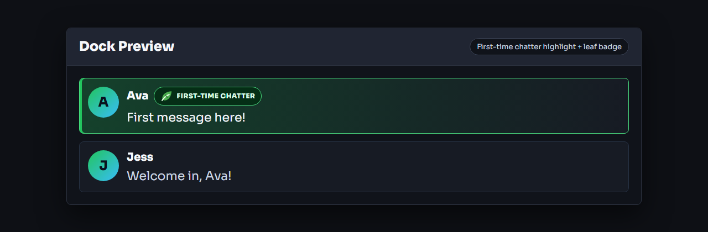
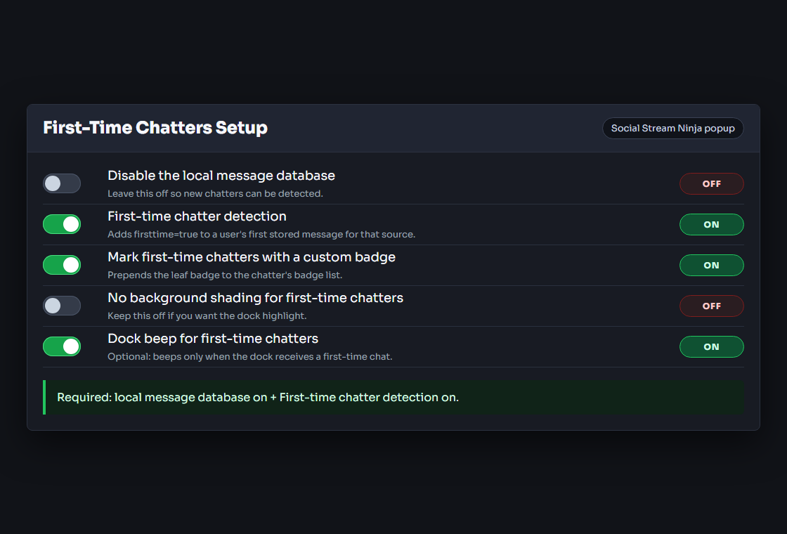

Что делает эта функция
Определение новых участников чата добавляет firsttime=true к первому сохранённому сообщению зрителя для этого источника. Док-панель может использовать признак для фонового выделения, сигнала только новым участникам и необязательного значка листка.

Необходимая настройка
- Откройте всплывающее окно Social Stream Ninja.
- Оставьте Отключить локальную базу сообщений выключенным.
- Включите Определение новых участников чата.
- Оставьте док-панель или оверлей открытым с тем же идентификатором сеанса.

Важно: Локальная база данных обязательна. Если она отключена, Social Stream Ninja не может определить, новый ли это участник.
Параметры отображения
- Фоновое выделение: по умолчанию включено в док-панели. Оставьте Не выделять фоном новых участников выключенным, если нужно выделение.
- Значок листка: включите Отмечать новых участников собственным значком чтобы добавить маленький листок перед значками участника.
- Сигнал док-панели для новых участников: включите, если звуковой сигнал док-панели должен срабатывать только для новых участников.
- Сигнал для новых или вернувшихся участников: включите, если нужен звук и для зрителей, возвращающихся после восьми или более часов молчания.
Использование признака в собственных оверлеях
Собственные оверлеи могут проверять data.firsttime === true. Если включён значок листка, он добавляется в chatbadges до поступления сообщения в оверлеи.
{
"chatname": "Ava",
"chatmessage": "First message here!",
"type": "twitch",
"firsttime": true
}Если ничего не показывается
- Убедитесь, что Отключить локальную базу сообщений выключено.
- Убедитесь, что Определение новых участников чата включено.
- Убедитесь, что Не выделять фоном новых участников выключено, если вы ожидаете выделение.
- Убедитесь, что Отмечать новых участников собственным значком включено, если вы ожидаете значок листка.
- Проверяйте сочетанием имени пользователя и источника, которого ещё нет в локальной базе данных.